Community Building, University of Exeter, 2024–25
During my MSc year at Exeter, the goal was simple: find a few people to play football with. What started as 4–5 high-energy individuals quickly grew into a grassroots community of over 100 members across 3 WhatsApp groups, entirely through word of mouth, organic conversations, and showing up at other societies.
The group grew so fast it got difficult to manage. We segmented, creating separate groups based on interest, preferences, and ability. We ran weekly games for all levels, mini-tournaments with full fixture lists, friendlies against other university groups, and socials that extended well beyond the pitch. Players just had to show up. Everything else was handled.
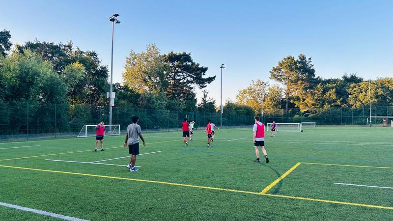
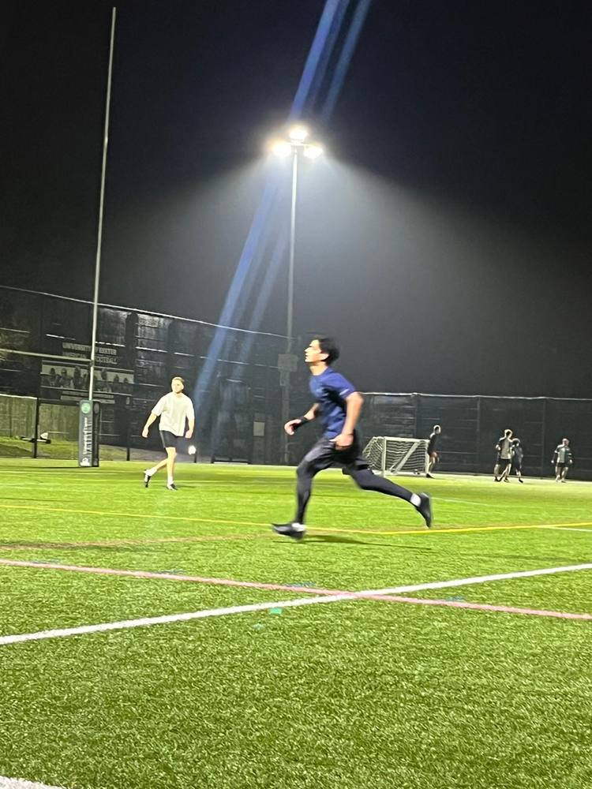
What we built
Casual kick-abouts, competitive matches, and structured mini-tournaments. We bought bibs and footballs. A member even built an AI-powered team balancing system, rating players on stats and abilities to generate fair teams automatically. Members just showed up and played.
Played friendlies against other university groups and societies. Organised mini-tournaments with full fixture lists, tracked results and top scorers to keep things competitive and engaging. The structure made people come back week after week.
Relationships built on the pitch turned into genuine friendships off it, pub crawls, meetups, FIFA game nights, pub quizzes, and festivals. It became a real community, not just a sports group. That's what made people invite their friends.
The growth story
It started with asking around. 4–5 people became 10, then 20. At some point the original group was overflowing, games were oversubscribed, coordination broke down.
So we segmented. Created separate groups for different ability levels and commitment types. "Football Exeter" became the main hub (114 members). "Casuals FC" for the relaxed crowd (83 members). This wasn't a marketing strategy, it was necessity. But the principles are identical to what I'd do for a brand: understand your audience, remove friction, segment by behaviour, and let the community do the acquisition for you.
Evidence
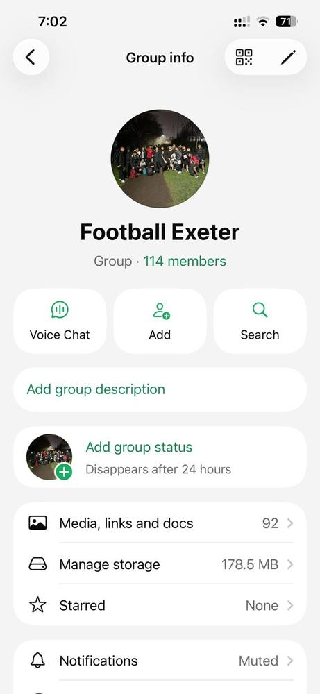
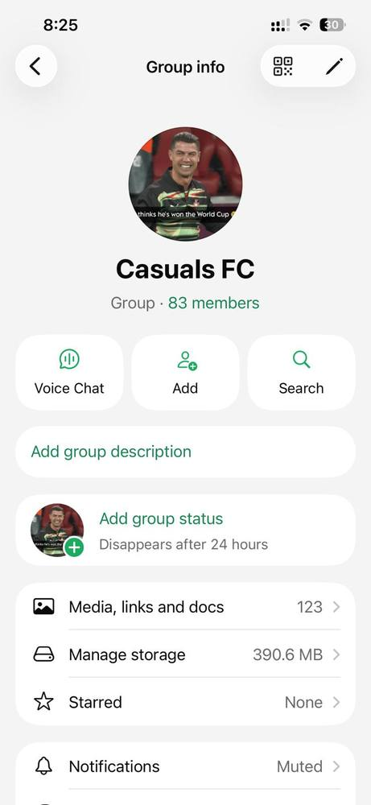
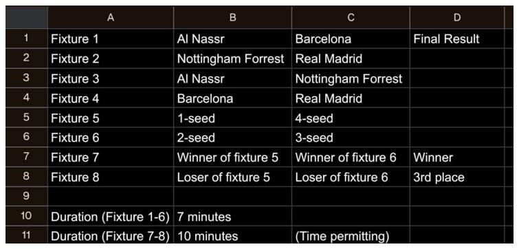
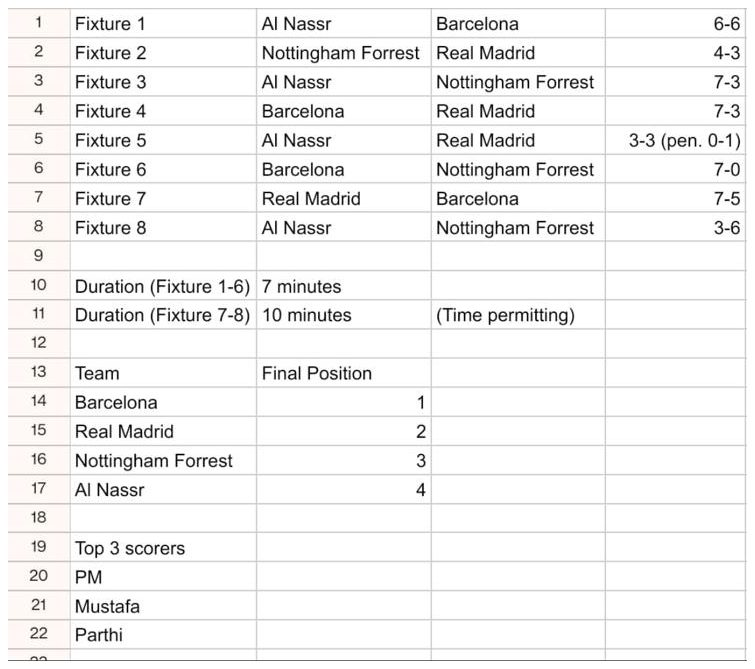
On the pitch
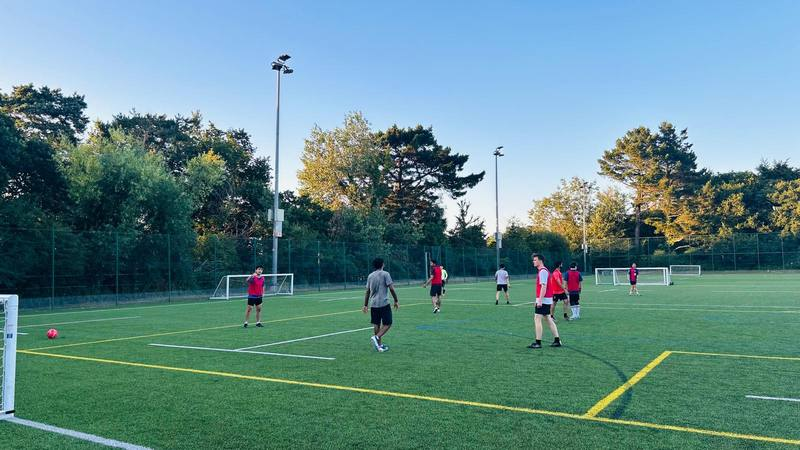
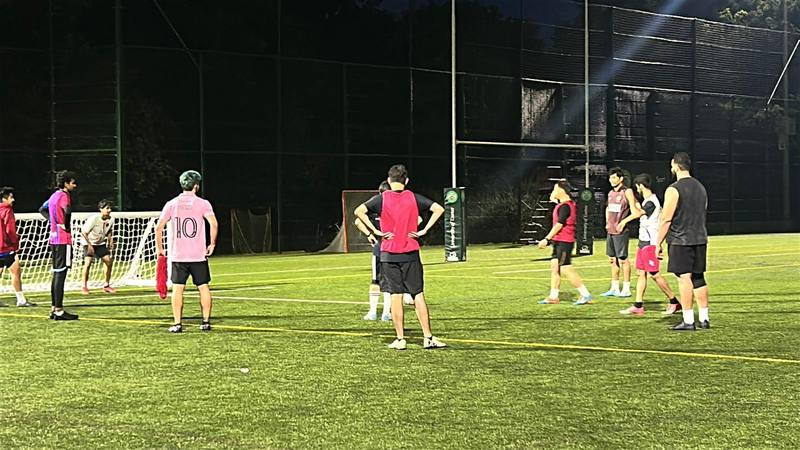
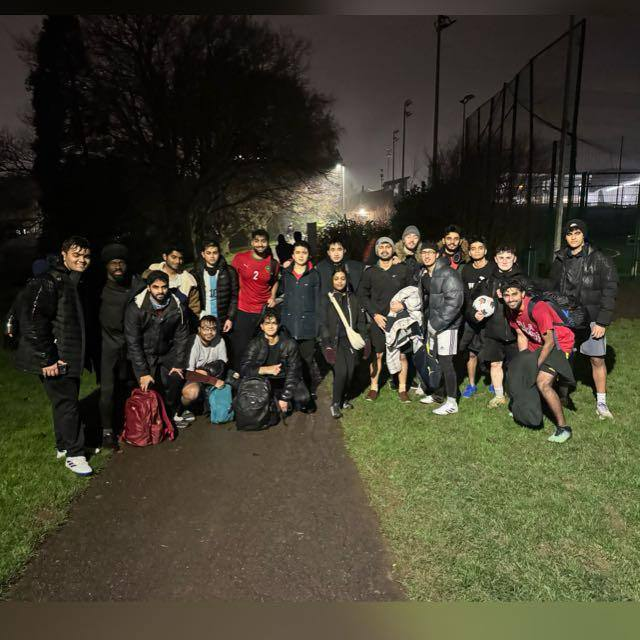
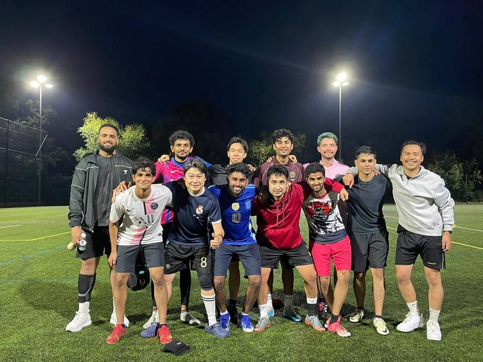
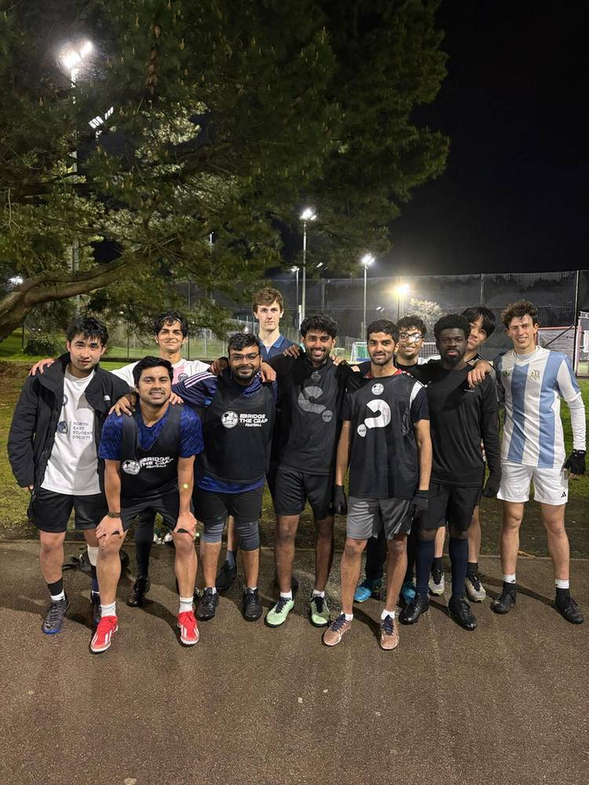
Why this matters for marketing
Community building is marketing at its most fundamental. No budget, no ads, no algorithm, just understanding what people want, removing friction, and creating something worth showing up to.
The same principles behind growing a following or launching a campaign apply here: know your audience, deliver consistent value, segment when it gets unwieldy, make participation effortless, and let the community do the marketing for you. 100+ people joined through nothing but word of mouth. That's organic growth in its purest form.